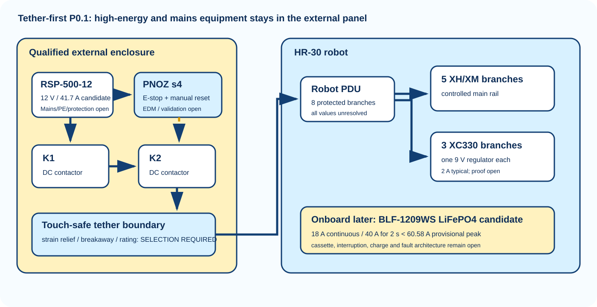

Tether-first topology

Implemented candidate correction
Two independent contactors
K1 and K2 are now exact Schneider LC1D40ABD candidates. All three main poles of each device are explicitly wired in series.
Mirror-contact EDM
Each built-in 21-22 NC contact is mirror certified and participates in the monitored reset loop. Received-device and whole-machine validation remain open.
Reset is not run
Manual reset can only restore safety-output eligibility. A separate fresh deterministic motion command is always required.
No achieved safety level
Category, PL, SIL, stopping time, diagnostic coverage, fault exclusions and common-cause performance remain unvalidated.
Power boundaries
- Tether-first: external enclosed supply, PNOZ s4, two independent series contactors, robot-side PDU and regulated branch rails.
- Direct 4S LiPo: rejected because 14.8 V nominal equals the XH/XM published maximum.
- Onboard later: LiFePO4 evaluation candidate only after load, cassette, fault-current, charge and interruption evidence close.
Controlled registers
configurations / power tree / devices / voltage checks / current and power budget / safety boundary / fault responses / current ECAD terminals / staged test gates / open inputs / primary sources
No energization claim
Exact non-contactor terminal selections, protection values, conductors, fault current, L/R, PE/0 V topology, stopping time, regeneration, precharge and physical validation remain open. This is a design candidate, not approval.